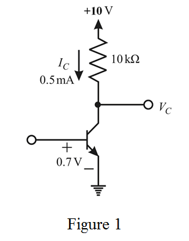

Determine the value of collector voltage.
Substitute 10 V for  , 0.5 mA for
, 0.5 mA for  and
and  for
for .
.
Therefore, the value of collector voltage is .
.
Draw the following circuit diagram.

Determine the value of collector voltage.
Substitute 10 V for , 0.5 mA for and for.
Therefore, the value of collector voltage is.
Write the expression of collector current.
.
Substitute 0.5 mA for  and 0.7 V for
and 0.7 V for .
.
…… (1)
The base to emitter voltage is, .
The new value of the collector current is,
…… (2)
Divide equation (2) by equation (1).
Therefore, the value of collector current is.
Determine the value of collector voltage.
Substitute 10 V for , 0.61 mA for  and
and  for
for .
.
Therefore, the value of collector voltage is.
Therefore, the value of voltage gain is.
Determine the voltage gain using the small signal approximation.
Substitute 25 mV for  , 0.5 mA for
, 0.5 mA for  and
and  for
for .
.
Therefore, the voltage gain using the small signal approximation is .
Therefore, the voltage gain obtained in both cases is equal.